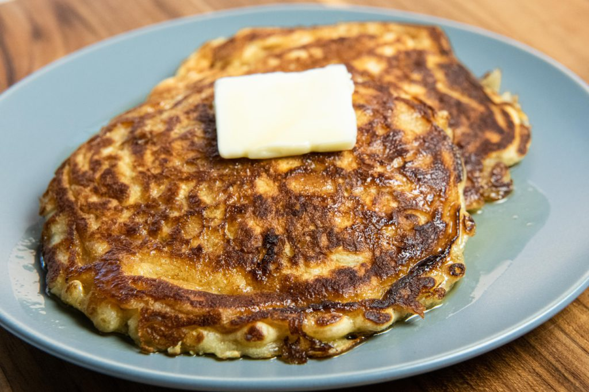

Swedish Oatmeal Pancakes

When to make these pancakes
When you want pancakes, but also oatmeal. And especially if you have lingonberry jam in the house.
Makes: 6 pancakes
Ingredients
- 1 cup rolled old-fashioned oats
- 1/4 cup all purpose flour
- 1 TBSP granulated sugar
- 1/2 tsp baking soda
- 1/4 tsp baking powder
- 1 pinch kosher salt
- 1 cup buttermilk
- 1 large egg, beaten
- 2 TBSP unsalted butter, melted
- 1/2 tsp vanilla extract
- (optional) cinnamon/cardamom
- Butter for frying
Instructions
- Whisk together dry ingredients.
- Whisk together wet ingredients.
- Slowly add dry ingredients to wet ingredient and mix until fully incorporated.
- Let the batter rest 30 minutes (or overnight), should slightly thicken.
- Cook in buttered skillet until pancakes are nicely browned on one side - flip and cook til golden on the second side.
- Serve with lingonberry jam and maple syrup.
Back to more pancake recipes!